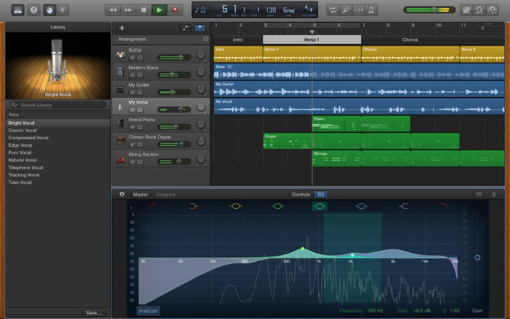

CUTHBERT
Composing music is a challenge even for the most experienced musicians. There is high learning curve to knowing all the relevant harmony and counterpoint theory barring new musicians from making the music they want. Even if someone learned all the theory they may get stuck with a lack of inspiration and not know what to start writing. CUTHBERT is a software tool designed to remove knowledge barriers for new musicisions and provide inspiration to experienced musicisians that just need an idea to start writing.
CUTHBERT, Comprehensive aUTo-arrangement algoritHm for BEats n’ RhyThms, is a music generator that has an intuition for music. This intuition was made by going through music datasets and generating markov chain models to represent/replicate the musical notions found in those datasets. To generate music from this model, CUTHBERT starts with random sampling from these datasets, producing a baseline for the passage (the inspiration element). This baseline is used to generate a new score incorporating and generating different rhythms, melodies, and beats from our datasets. One feature included in CUTHBERT. is the freedom for the user to replace the sampled baseline with a piece of their own music. This piece of music is usually given in the form of a MIDI file, a common medium for current electronic audio production.
For the music generation step, CUTHBERT, is provided various datasets separated into melodies, chords, and rhythms. CUTHBERT will precompute a set of Markov chain models: one to handle melodies, one for chords, and another for rhythms. After analzying its datasets and computing its models, we assign a part in the score to be a corresponding model (one part gets a model which is tied to either beats, melodies, or chords) and generate the parts using their corresponding models (more on that if later sections). The generation of each part accounts for what the other parts are doing, that way the different parts of the score are coherent with each other and not playing different songs, competing for the users attention.
Here's a quick sample of what's to come:
We hope you enjoy reading about our final project!
-Lucy, Karthik, Kevin, Alex, Edmund